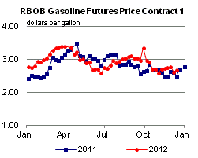

Released: December 19, 2012
Next Release: December 28, 2012
Could the United States become the leading global producer of liquid fuels, and how much does it matter to U.S. and world energy markets?
Significant increases in U.S. production of crude oil and other liquid fuels, and the outlook for further growth, have focused attention on the possibility that the United States could surpass Saudi Arabia to become the leading global producer. However, U.S. production growth is only one factor that will determine when such a milestone might be reached. Equally important is the production level in Saudi Arabia, a leading member of the Organization of the Petroleum Exporting Countries (OPEC). Regardless of whether the United States is the leading producer of crude oil and other liquid fuels, a higher level of U.S. oil production can significantly boost the U.S. economy, and also tends to hold down global oil prices through its effect on global crude oil and product market balances. However, regardless of how much the United States is able to reduce its reliance on imported liquids through increased domestic production, it will not be insulated from price shocks that affect the global oil market.
Currently, Saudi Arabia is the global leader in liquid fuels production. Saudi Arabia, a leading member of OPEC, plays a unique role in world oil markets as the only producer with significant spare production capacity and a demonstrated willingness and ability to function as a swing producer, varying its output to help balance the market in response to supply or demand changes. While nearly all other OPEC and non-OPEC producers operate at their effective capacity, and would continue to do so absent a dramatic drop in oil prices, Saudi production levels are likely to vary significantly in response to global supply or demand developments. Clearly, any rank ordering of global liquids producers depends as much on Saudi production trends as those in the United States. There are three key factors that can drive variation in Saudi output:
• Demand fluctuations: The global demand for oil is highly sensitive to the level of economic activity. Both future economic fluctuations arising from a variety of circumstances and changes in longer-term economic growth trends can have significant impacts on global oil demand, which in turn will impact the call on Saudi production. For example, global liquids demand averaged 85.9 million barrels per day (bbl/d) in 2007, but fell to 84.8 million bbl/d in 2009 because of a sharp decline in global economic activity. Saudi production of crude oil and condensate was 8.7 million bbl/d in 2007, but after rising to 9.3 million bbl/d in 2008 fell to only 8.2 million bbl/d in 2009.
• Non-OPEC production growth: Production in non-OPEC countries typically rises to the level of available capacity, so that non-OPEC producers seldom have spare production capacity. Non-OPEC production capacity and the extent of supply disruptions affecting non-OPEC production for either technical or political reasons at any point in time can significantly change the amount of OPEC production needed to balance the global oil market. In addition to the timing of major conventional oil projects, one key factor affecting non-OPEC production growth is the extent and timing of tight oil development, which depend on both the amount and quality of technically recoverable resources that may be identified and a variety of above-the-ground factors that can significantly influence the level and timing of production.
• OPEC production and capacity growth outside of Saudi Arabia: The implications of a given projected call on OPEC production for the level of Saudi Arabia's production are highly dependent on capacity and production developments in the other OPEC countries, which are also influenced by short-term disruptions and the amount of new capacity added. For example, Saudi Arabia increased production in response to both the disruption of Libyan production during the 2011 civil war in that country and the reduction in Iranian oil exports in the wake of tougher sanctions implemented by the United States and the European Union during 2012. Currently, Saudi Arabia is the only OPEC producer with significant effective spare production capacity. However, Iraq and Iran, which each hold large reserves and resources of relatively cheaply produced oil, both have a strong interest in increasing their capacity and production if internal and external barriers can be overcome. Venezuela also has access to large, albeit more challenging, reserves and resources. One example of the uncertainty surrounding OPEC capacity developments outside of Saudi Arabia is the wide range of official and private estimates for Iraq's production capacity and output over the next five to ten years - hardly a distant timeframe in the context of major energy projects. The more success these countries have in raising capacity and output over the coming years, the less Saudi production is needed to balance the market at any given level of projected call on the OPEC producers.
Accounting conventions for liquids production
In addition to these three factors, which together contribute to the uncertainty in the future path of Saudi production, the choice of accounting conventions for measuring liquids production also affects which country is considered the world's leading producer at a given date. Using the broadest definition of liquids production, encompassing crude oil, condensate, natural gas liquids, biofuels, and refinery gain, the 2012 difference between U.S. and Saudi production is currently estimated by the U.S. Energy Information Administration to be less than 1 million bbl/d, considerably smaller than the gap of 3.5 million bbl/d when the comparison is restricted to crude oil production only (Figure 1).
{kind=link}
Clearly, any prediction of a crossing in U.S. and Saudi production paths is highly dependent on many difficult-to-forecast drivers that primarily impact the level of Saudi production. For this reason alone, one simply cannot attach high confidence to any forecast that suggests the specific timing of any future crossing or re-crossings. And, as already noted, any declaration of whether a crossing has occurred will inevitably also reflect accounting conventions even after production data is already in hand.
Implications
While both U.S. and Saudi production trends are closely watched by market analysts, any future crossing of production paths is more likely to fall into the category of an interesting factoid rather than a watershed event. However, this observation does not undercut the overall importance of higher U.S. oil production. Along with changes in U.S. liquids demand, future trends in U.S. production will determine the share of U.S. use of liquid fuels provided by net imports, which has already declined sharply from its peak of 60 percent in 2005 to EIA's estimate of under 40 percent in 2013. Moreover, a higher level of U.S. production can significantly boost the U.S. economy and also tends to hold down world oil prices through its effect on global market balances. This latter effect was likely particularly important in 2012, when global spare capacity was already at fairly low levels even with a roughly 700,000 bbl/d increase in U.S. crude oil production over the 2011 level.
However, regardless of how much the United States is able to reduce its reliance on imported liquids, it will not be insulated from price shocks that affect the global oil market. And Saudi Arabia will likely continue in its unique role as the only holder of significant spare oil production capacity among world oil producers.
Gasoline and diesel fuel prices down for a 3rd consecutive week
The U.S. average retail price of regular gasoline decreased 10 cents to $3.25 per gallon, three cents higher than last year at this time, and the lowest price in 2012. Prices decreased in all regions of the nation for the third consecutive week, with the largest decrease coming in the Midwest, where the price decreased 14 cents to reach $3.14 per gallon. The Rocky Mountain price has decreased 56 cents since the end of September and is now $3.21 per gallon, 12 cents lower than last week. The West Coast price is $3.46 per gallon, down nine cents from last week, and 95 cents below its 2012 high of $4.41 per gallon on October 8. The Gulf Coast price decreased eight cents to $3.05 per gallon, and on the East Coast the price fell seven cents to $3.35 per gallon.
The national average diesel fuel price decreased five cents to $3.95 per gallon, 12 cents higher than last year at this time. The U.S. average diesel price has decreased 9 cents in the last three weeks, and is at its lowest level since August 6. Prices decreased in all regions of the nation, with the largest decrease coming in the Rocky Mountain region, where the price declined seven cents to $3.87 per gallon. The West Coast price is just under $4.00, a decrease of five cents from last week, and the first time below the $4-per-gallon mark since the beginning of August. The East Coast price dropped four cents, but is still the highest in the nation for the second consecutive week at $4.03 per gallon. The Midwest price is $3.92 per gallon, down six cents from last week, and the Gulf Coast price is the lowest in the nation at $3.85 per gallon, a decrease of three cents from last week.
Propane inventories decline
U.S. propane stocks fell 2.0 million barrels to end at 69.2 million barrels last week, 12.3 million barrels (22 percent) higher than a year ago. Midwest regional inventories dropped by 1.1 million barrels, while Gulf Coast inventories declined by 0.7 million barrels. Rocky Mountain/West Coast stocks dropped by 0.2 million barrels, and the East Coast region gained slightly. Propylene non-fuel-use inventories represented 5.4 percent of total propane inventories.
Residential heating oil and propane prices decrease
Residential heating oil prices declined during the period ending December 17, 2012. The average residential heating oil price fell by 2 cents to just under $3.94 per gallon, nearly 12 cents per gallon higher than the same time last year. Wholesale heating oil prices increased by 5 cents per gallon last week to nearly $3.11 per gallon, 23 cents per gallon more than last year at this time.
The average residential propane price fell 1 penny to $2.40 per gallon, 45 cents per gallon lower than the same period last year. Wholesale propane prices remained flat, holding at $0.83 per gallon for the week ending December 17, 2012, 50 cents per gallon lower than the December 19, 2011 price.
Text from the previous editions of This Week In Petroleum is accessible through a link at the top right-hand corner of this page.
| Retail Data | Change From Last | Retail Data | Change From Last | ||||
| 12/17/12 | Week | Year | 12/17/12 | Week | Year | ||
| Gasoline | 3.254 | Heating Oil | 3.938 | ||||
| Diesel Fuel | 3.945 | Propane | 2.401 | ||||
|  | |||||||||||||||||||||||||||
|
|||||||||||||||||||||||||||
| *Note: Crude Oil Price in Dollars per Barrel. | |||||||||||||||||||||||||||
| Stocks Data | Change From Last | Stocks Data | Change From Last | ||||
| 12/14/12 | Week | Year | 12/14/12 | Week | Year | ||
| Crude Oil | 371.6 | Distillate | 117.0 | ||||
| Gasoline | 219.3 | Propane | 69.223 | ||||